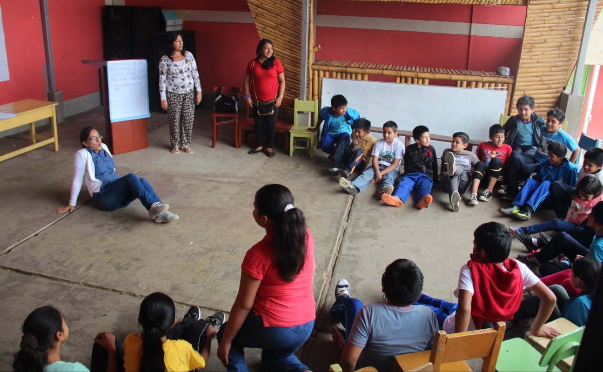

Una breve introducción
El profesional de salud estudia el comportamiento humano basado en los principios científicos del aprendizaje: emociones, pensamientos-cogniciones y conductas y cómo interactúan para adaptarse al mundo que les rodea.
La primera vez que visitas la consulta del psicólogo es habitual que no sepas que debes decir o qué se espera de ti, por lo cual debes tener confianza para expresarte con total libertad para poder encontrar la solución a tus problemas. Tan solo debes estar dispuesto a dejarte ayudar. Una sesión suele durar entre 45-90 minutos. Dado que no hay dos personas ni dos situaciones iguales, el tratamiento psicológico y la recuperación de cada paciente son únicas. Cada persona es diferente a todas las demás y siempre lo tenemos en cuenta al ayudar a las personas que acuden a nosotros. El estado emocional en el que te encuentres, el tiempo que hayas esperado, las experiencias de vida, la edad y tus expectativas influyen en el desarrollo de la terapia. Nuestro trabajo es determinar qué necesitas para encontrarte bien y facilitarte las herramientas para lograrlo. ¡Ahora puedes empezar a relajarte, estas en buenas manos!
Nuestros Servicios Psicológicos
- Asesoramiento y orientación psicológica
- Evaluaciones psicológicas
- Atención Individual y grupal
- Orientación vocacional
- Programas de Prevención y Promoción de la Salud Mental
Terapia Psicológica
- Trastornos de: Ansiedad, depresión, fobias
- Trastornos disruptivos del control de impulsos y de la conducta, dependencia emocional, conducta alimentaria
- Desarrollo personal, orientación vocacional, estrategias y hábitos de estudio, intervención en procrastinación académica
- Desarrollo de habilidades sociales: Autoestima, toma de decisiones, control de ira, etc
- Orientación y desarrollo
¿Qué es la consulta Psicológica?
La consulta psicológica es la parte inicial de la relación que se establece con un profesional de psicología, que permite conocer y evaluar los motivos por los que la persona solicita ayuda, y en función de la identificación de las áreas problemas y/o del diagnóstico, permite fijar la orientación, objetivos y estrategias terapéuticas que necesite el paciente.
¿Qué es la evaluación Psicológica?
La Evaluación Psicológica es un proceso sistemático de recogida de información sobre el comportamiento y las características de una persona, o grupo de personas y su contexto, para lo cual, el psicólogo se basa en diferentes técnicas y herramientas (test y entrevistas) creadas para este fin.
¿Qué es la psicoterapia?
La Terapia Cognitiva- Conductual es un modelo de psicoterapia que como su nombre lo indica surgió de dos grandes teorías de la psicología: el conductismo y el cognitivismo. Es un modelo de terapia estructurado, activo y centrado en el problema; pone énfasis en los patrones disfuncionales actuales de los pensamientos y conductas. Suele ser de corta duración y coloca interés en la cuantificación, siendo posible la medición de los progresos obtenidos.
La relación terapeuta-paciente es de colaboración y el enfoque es didáctico. Paciente y terapeuta se comprometen a trabajar con un objetivo común; además fomenta la independencia del paciente. Dado que este tipo de terapia busca lograr un funcionamiento independiente, en ella se enfatiza el aprendizaje, la modificación de conducta, las tareas de autoayuda y el entrenamiento de habilidades inter sesión. En esta terapia se definen objetivos concretos a lograr y de esa forma es mucho más fácil evaluar o modificar los síntomas específicos y saber claramente lo que se quiere obtener o hacia a donde apunta la terapia. Su meta es eliminar, o al menos reducir los síntomas, y hace hincapié en el cambio.
Los objetivos primordiales de la TCC son:
- Disminuir el pensamiento disfuncional
- Reconocer esquemas negativos que son patrones de pensamientos estables y duraderos que representan las generalizaciones de una persona acerca de experiencias pasadas, y de esta manera juzga el presente y el futuro
- Distorsiones cognitivas
- Incrementar las habilidades de autocontrol
- Optimizar la capacidad de resolución de problemas
¿Cómo sabemos si necesito acudir al psicólogo?
Habitualmente las personas no acuden en busca de la ayuda de un psicólogo, (y además, teniendo en cuenta de que no todo problema emocional requiere de una intervención de este profesional); sin embargo, se debe tomar la decisión de acudir a él cuando presentas:
- Trastornos del estado de ánimo, como la ansiedad y la depresión
- Timidez y fobia social
- Adicciones
- Trastornos de la conducta alimentaria
- Estrés
- Trastornos del control de los impulsos
- Problemas de autoestima y falta de confianza
- Trastornos en la esfera de la sexualidad
- Trastornos de personalidad
Sin embargo, los psicólogos no solo atienden trastornos propiamente dichos, también pueden ayudarte a enfrentar otras situaciones, como, por ejemplo:
- Hábitos que desees erradicar
- Problemas familiares